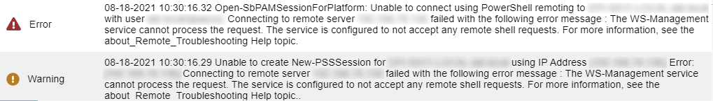
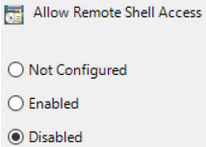
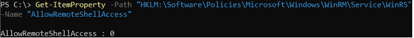

Summary
If remote shell access has been disabled for a Windows resource, then SbPAM's Action Service won't be able to perform actions on that host. This can be confirmed if an action's logs in SbPAM contain the following error:
Unable to connect using PowerShell remoting to <hostname> with user <domain>\<user>: Connecting to remote server <ip_address> failed with the following error message : The WS-Management service cannot process the request. The service is configured to not accept any remote shell requests.

This is caused by a Group Policy, configured at the local or domain level, that disables remote shell access to the resource the GPO has been applied to:

Instructions
This GPO can be verified via the following path in the Group Policy Editor on the target resource (or domain GPO configuration). As with all GPOs, domain configuration takes precedence over local configuration.
Computer Configuration > Administrative Templates > Windows Components > Windows Remote Shell > Allow Remote Shell Access

This can also be verified in PowerShell, however the GPO needs to first have been Enabled or Disabled in order for the correct registry key to have been created:
Get-ItemProperty -Path "HKLM:\Software\Policies\Microsoft\Windows\WinRM\Service\WinRS" -Name "AllowRemoteShellAccess"
If the value is set to 0, then remote shell access is Disabled. If the value is set to 1, then remote shell access is Enabled.

To resolve the error, this GPO needs to either be Enabled or Not Configured, which in a domain should be set via domain-configured GPO rather than manually modifying the registry key on a target resource.